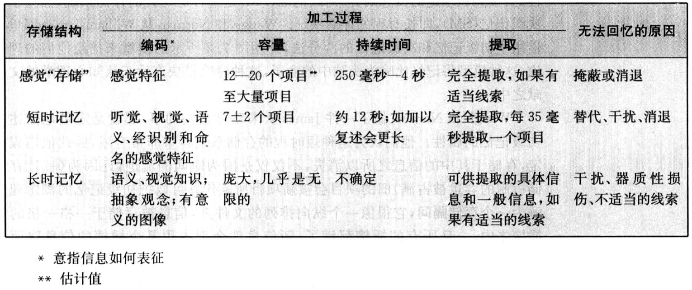

记忆过程¶
目前，对人类记忆的科学研究主要有两组取向：
-
着重于记忆的心理组成，强调通过传统的方法（例如，让被试学习一些材料，测试他们的回忆量）
-
对记忆的神经学基础感兴趣，使用脑成像技术来研究特定病理现象中的记忆改变，或者施用药物来影响神经传递
尽管我们知道，记忆功能是遍布于整个脑中的，但对特定记忆和记忆功能所对应的脑区进行标注的工作表明，有三个区域似乎与记忆直接相关：
- 大脑皮层：涉及思维、问题解决和记忆等高级认知活动
- 小脑：调节运动功能和动作记忆
- 海马：负责加工新异信息并其传送到大脑皮层的有关部位加以永久储存
现代研究把大脑记忆分为两类：
- 程序性记忆procedural memory:处理动作技能
- 陈述性记忆declarative memory：q包含关于世界的信息和知识
被经历的感觉信息很快会被传送到大脑皮层，在皮层上神经元之间形成了暂时性的联结。为了使这些印迹持久存在，必须要进行称为长时程增强（long-term potentiation,LTP）的加工过程。它指神经细胞在面临频繁重复的刺激时，会在很长一段时间内增加自身反应倾向的现象。
一般认为，长时陈述性记忆始于大脑皮层向海马结构发送信息之时，这一过程通过快速反复地刺激皮层上的神经环路而增强了记忆。
关于记忆的神经生物机制还有许多地方尚不清楚，但有些内容是确定无疑的：
- 外部世界的物理事件，比如光能和声能，被感觉系统探测，转化成神经冲动，并传递到脑部，在那里对它们进行初步分析并同时传送到其他中枢，包括海马区域，该区域还对刺激事件的情绪性内容进行估量，这些印迹，有时被称作记忆痕迹engram,进而被传送到大脑皮层和其他区域，激活神经化学物质，这一过程有时会导致持久性记忆的形成。
感觉记忆中什么也保存不下来，短时记忆能够存储一些信息，长时记忆的存储容量几乎是无限的。

记忆模型¶
-
Waugh and Norman
初级记忆是一种短时的存储系统，独立于次级记忆（长时程的存储系统）。
认为短时程的信息消失是因为容量被占满，旧项目被新项目取代。
-
Atkinson and Shiffrin
记忆有三个存储机制：
- 感觉登记器
- 短时存储器
- 长时存储器
一项刺激内容会以其感觉维度即时登记，然后要么遗失，要么被传递到进一步的加工阶段。

-
回忆水平LOR
俄国心理学家P.I.Zinchenko认为，回忆水平取决于一项活动的目标。不同的目标会激活不同的联结系统，因为个体对记忆材料有不同的导向。
-
加工水平LOP（Levels-of-processing model）
输入的刺激材料会受到一系列的分析，最初是浅层的感觉分析，而后进展到更深入、更复杂的抽象和语义层面上的分析。一个刺激究竟被传送到浅层还是深层阶段，取决于刺激的性质和用于加工处理的时间。
在深层水平上受到加工处理的项目比仅受到浅层加工的项目更不容易被遗忘。
我们可以在对信息进行较基本的层次分析之前，就对其在意义层面上进行觉知。
-
自我关联效应（SRE）
和自己相关的材料记忆得越好。
自我评价记忆究竟是否存储于脑内的不同区域，人们尚存疑问。但凭直觉，科学家认为，很有可能大量宝贵的大脑空间被划拨出来专司储存自恋特质。
-
情节记忆和语义记忆
Tulving将记忆分为两种：情节记忆和语义记忆。
情节记忆：使人们能够记住过去所发生的事件。
语义记忆：对词汇、概念和抽象观念的记忆，为语言活动所必需。是一个人所拥有的有组织的知识系统，涉及词汇和其他语词符号、它们的意义和所指的对象，还涉及它们之间的关系，以及支配这些符号、概念和关系的规律、法则和算法。
语义记忆和情节记忆之间的区别不仅仅在于其内容，还体现在各自的遗忘规律上。情节记忆的信息会快速遗忘。
-
记忆的联结主义（PDP）模型
PDP模型的一个根本的假设是：心理过程发生于一个由彼此紧密相联的基本单元所构成的系统之中，其中每个单元都能被激活并与其他单元之间互通信息。单元是基本的处理元件，代表了关于事物性质的可能假设，比如呈现材料中的字母，控制句法的规则，以及目标或行为。
单元好像原子，因为两者都是构建模块，可以用来组成更为复杂的结构，并且可以与同类的其他单元结合起来，以构成更大尺度的网络。大脑中的神经元就是一种单元，它和其他神经元以一种平行加工的方式结合起来，形成了一个大的系统。
单元组成模块，在这一模型中，信息被接收进来，扩散到整个模型之中，并在经过之后留下痕迹。这些痕迹改变了模型中单个单元之间的联结强度（有时被称为权重）。一个记忆痕迹，可能分布于许多不同的联结之中。
根据这一模型，信息在记忆中的的表征形式是与其他单元的大量联结。如果一种属性同时属于很多不同的记忆内容，并且被激活，那么这将激活所有包含该属性的记忆内容。避免干扰性信息在系统中泛滥的方式之一，就是假设单元之间的联系服从抑制法则（排除法）。
记忆的联结主义模型所具有的优点之一，在于它能够解释复杂的学习行为，这是我们在日常生活中时常遇到的一种记忆活动，这些活动中就可能涉及对一个类别的学习或者原型的形成。